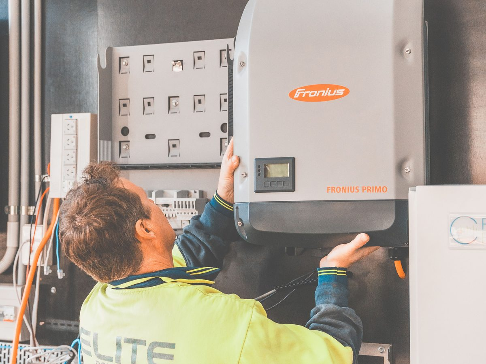

An inverter throwing a fault code isn't always an emergency — most of the time it's the inverter doing exactly what it's designed to do: protecting itself and the rest of the system by shutting down or limiting output the moment something falls outside safe operating conditions. Knowing what the common fault categories mean can save you a wasted service call, or tell you it really is time to call someone.
Note on code numbering
Exact fault code numbers and names vary between manufacturers (Growatt, SMA, Fronius, Deye, and others all use their own numbering). This guide groups faults by category, since the underlying causes and fixes are largely the same across brands even when the exact code label differs — always cross-check the specific number against your inverter's manual for the precise definition.
Common fault categories
| Fault category | What it means | Common causes |
|---|---|---|
| Over-voltage (grid or PV) | Voltage at the input or output exceeded the inverter's safe threshold | Long PV strings in cold weather (voltage rises in cold), unstable grid voltage, undersized cable causing voltage rise |
| Under-voltage | Voltage dropped below the minimum operating threshold | Heavy shading, failing panels, loose DC connections, low battery voltage on hybrid units |
| Ground fault / insulation fault | Detected current leakage to ground | Damaged cable insulation, water ingress into a junction box, moisture inside the inverter enclosure |
| Over-temperature | Internal inverter temperature exceeded safe limits | Poor ventilation, direct sun exposure on the enclosure, blocked cooling fan, high ambient temperature |
| Grid frequency fault | Grid frequency outside acceptable range | Usually a genuine grid-side issue, not the inverter — common during grid instability or generator backup switching |
| Anti-islanding / GFCI trip | Safety system detected an unexpected condition and disconnected | Often a nuisance trip from a brief grid disturbance; repeated trips point to a real wiring or grid issue |
On one project, after finishing the installation and trying to start the system up, it simply wouldn't run. Checking the inverter, the fault turned out to be an incorrect grid country code. I looked up the correct country code for the inverter, entered it, and the system started up immediately and began producing normal data.
What to check before calling for support
- Write down the exact code and any accompanying message — this is the single most useful piece of information for diagnosing remotely or over the phone.
- Check the time of day and weather. A fault that only happens at peak sun on a hot day points toward over-temperature or over-voltage; one that happens at dawn/dusk often points toward under-voltage.
- Look for a pattern. A one-time fault that cleared itself after a restart is very different from a fault that recurs every few minutes — the second case needs real investigation, not just a reset.
- Physically inspect what you can safely reach. Check for obvious signs: blocked vents, visible moisture, a tripped breaker, or a loose-looking connector — many faults have a visible cause once you know what category to look for.
- Try a controlled restart only once. If the fault clears and doesn't return, it may have been a transient condition. If it returns immediately, don't keep cycling power — that's a sign of a real underlying fault, not a glitch.
When it's safe to reset yourself vs when to call a professional
Nuisance trips from brief grid disturbances or a one-off over-temperature event on an unusually hot day are generally safe to clear with a standard restart per the manufacturer's procedure. Faults that recur immediately, any ground fault or insulation fault, or anything accompanied by a burning smell, visible damage, or unusual sounds should not be reset repeatedly — those need a qualified technician before the system is re-energized.
Frequently asked questions
Why does my inverter fault only in the morning or evening?
Low sun angles mean lower PV voltage, which is a common trigger for under-voltage faults — especially on strings that are already sized close to the inverter's minimum input voltage.
Is it normal for an inverter to fault occasionally?
An occasional, non-repeating fault — especially tied to a specific weather event or grid disturbance — is generally normal protective behavior. Frequent or recurring faults of the same type are not normal and warrant investigation.
Can a firmware update fix recurring fault codes?
Sometimes — manufacturers do occasionally adjust fault thresholds or fix false-trip bugs via firmware. It's worth checking for updates, but a firmware update won't fix a genuine underlying electrical issue.